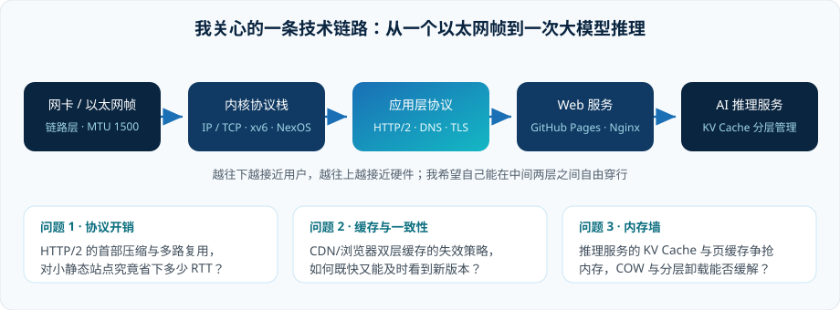

我在看什么

🧱
操作系统内核
在 xv6 / NexOS 上做过按需分配、写时复制（COW）、语义文件系统等实验。最喜欢的一类问题：抽象 leak 时，代价由谁支付？
🔌
网络协议栈
从以太网帧到 HTTP/2 的二进制分帧。相比背协议，我更愿意抓包看真实报文长什么样。
🧠
推理系统的资源管理
大模型服务的显存 / 内存 / SSD 分层与 KV Cache 复用，本质上是操作系统老问题在新场景里重生。
课程实验记录（做过的，不是读过的）
| 实验 | 平台 | 我实现 / 观测的东西 | 最大的收获 |
|---|---|---|---|
| xv6 基线与调度 | QEMU + RISC-V | 阅读 scheduler()，加统计计数器观察上下文切换次数 |
"进程切换很贵"从一个口号变成了一组数字 |
| 按需分配 & COW | NexOS | 实现 user_lazy_alloc()，用 PTE_COW + 物理页引用计数改造 fork() |
引用计数错一位，就能收获一整个下午的 panic |
| 语义文件系统 | NexOS | 给 FAT16 文件挂关键词属性，用 B+ 树做按关键词检索 | 文件系统不只是"存字节"，元数据设计才是灵魂 |
| AI 服务与算力调度 | NexOS | 请求队列 + worker 协议，单条前缀缓存复用（用户态 memcpy 版） | 把"缓存"从进程私货变成系统服务，收益立刻不一样 |
| 静态站点与 HTTP 观测 （本次计网实验） | HTML/CSS + Git | 手写 4 页站点 → 部署 GitHub Pages → 用 curl -Iv 读出协商结果为 HTTP/2 |
应用层协议不再是书上的图，而是一行真实的响应状态行 |
说明：本页只记录自己亲手完成或复现过的内容；未验证的性能数字一律不写。想看我怎么判断"这个实验真的通了"，可以读
博客里关于部署排查的那一篇。
在读 / 读过清单
- Kwon et al. Efficient Memory Management for LLM Serving with PagedAttention（SOSP'23， arXiv:2309.06180）—— 虚拟内存思想搬到推理引擎，读完会重新理解"分页"。
- Zheng et al. SGLang: Efficient Execution of Structured LM Programs（NeurIPS'24， arXiv:2312.07104）—— RadixAttention 就是基数树在 KV 复用上的直接落地。
- Sheng et al. FlexGen（ICML'23，arXiv:2303.06865）—— 单卡 + CPU + SSD 分层调度的线性规划建模，很像操作系统的置换问题。
- IETF HTTP/1.1 语义与内容协商（RFC 9112）、 HTTP/2（RFC 9113）—— 做本次实验时把第 2、3 节当作工具书翻了一遍。
阅读方法很笨但有效：每读一篇，就在实验记录里写一句"如果只能在 xv6 上实现它的一个部件，我选哪个"。
我的工具链
| 用途 | 工具 | 为什么是它 |
|---|---|---|
| 日常开发 | WSL2 + Neovim + tmux | 键盘不离主键区，思路不容易断 |
| 版本管理 | Git / GitHub | 本页面每一次改动都有 commit 记录，写博客顺手就发版 |
| 报文观测 | curl -v / Wireshark / tcpdump | 协议不懂就抓包，比猜快 |
| 内核调试 | QEMU + gdb | 在页表里迷路时的唯一指南针 |
| 自动化 | Python + 浏览器自动化 | 重复三次的操作，值得写脚本 |